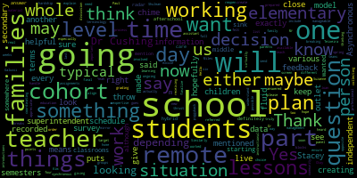

[Cushing]: All right, good afternoon, ladies and gentlemen. Good evening. Thank you very much for joining us today. We are here at Medford Central Office. My name is Peter Cushing. I am the assistant superintendent of schools here with.
[Galusi]: Suzanne Galussi, also the assistant superintendent of elementary education.
[_gfHlARF6Jg_SPEAKER_02]: And. Maurice Edvard-Vincent, superintendent of schools.
[Cushing]: And so this platform, I noticed somebody posted in the chat, is this like Zoom? So this is not like Zoom. This is kind of a television broadcast studio presentation that allows us to bring in numerous people. We anticipated a very high volume. of participants, and so the Zoom functionality has a limit to it, and we wanted to make sure that we could have as many people as possible in, and the way you will communicate with us is you will submit a comment to the chat function or the comment box on the YouTube channel or our Facebook page. This presentation will be recorded and it will be available for people to watch, hear the answers, we'll be responding to your questions, and if we don't have answers, we're going to have to get back to you. This is an ever-changing situation. And I'm going to turn it over to Dr. Edouard-Vincent to give a little bit more information about that. And then we'll welcome some of our panelists into the studio who have really helped with our development of this plan thus far.
[_gfHlARF6Jg_SPEAKER_02]: So I want to say hello and thank you everyone for joining us today to share your ideas, your thoughts, your perspectives, your concerns. Also, I want to name specifically how challenging this current situation is for everyone. And given the challenging and complicated circumstances, there would be honestly, there's no ideal plan. But working together, the way we've come together for Medford, this is the best plan that we were able to come up with thus far. So this is an opportunity, again, for you to be able to share your ideas, your thoughts, feedback with us so that we can continue to further enhance and improve what it is that we're trying to do for all of Medford. I want to give you just a brief overview of the process that we've taken. This was truly a collaborative process that involved many, many different stakeholders. We utilized three core values. Our three guiding pillars were equity, consistency, and safety. And those three guiding pillars that were used, they helped us to guide our planning of the workgroups, and how we operated to get to the final end product that you received over the weekend on Friday. So we had work groups and those work groups focused on three areas. It was operations, it was instruction, and it was also communications. We held some listening sessions last week and got additional thoughts and perspectives of others who weren't able to join the subgroups, the working groups. But because they had volunteered and they were willing to be part of the team, we were so appreciative of that contribution from them. So we did hold some listening sessions last week and we're holding one this evening and again tomorrow as well. And then again, gathering all of that feedback from what we had last week, we released the plan on Friday evening. So what is our timeline moving forward? We want to continue to hear community feedback and we're going to integrate that feedback into our final plan. which we'll be presenting to school committee on Thursday evening, this Thursday, August 6th at 6 p.m., we have a school committee meeting and it'll be formally posted tomorrow, but that'll be an opportunity for us to talk again and discuss and for the school committee to weigh in and provide their guidance. The official plan will be submitted to DESI on Monday, August 10th. So we're on a very, very tight timeline, but we're going to do everything that we can to make that tight timeline and be in compliance with DESI. So I just want to give you the goals for tonight's session. We want to be able to hear your thoughts, your ideas, your concerns as we finalize the plan. And we're going to do our best to address those thoughts, your concerns, your ideas, questions that we can answer. There is a panel of us. We will jump in and we will answer those questions. And again, as Dr. Cushing said earlier, if we cannot answer the questions, then we will get it added to our FAQ. So, you know, and again, due to the time constraints, we're not going to be able to probably answer every single question, because I can see the questions are coming in, you know, at a very good clip right now, which is wonderful, because all of your questions are going to be saved, and we will be able to address those questions in our FAQ. So, again, tonight, for your participation, please add your questions in the chat functions, either on Facebook or YouTube, and myself or any of the other panelists, we are going to try to start answering as many questions as possible. Dr. Cushing will be moderating today's session. Thank you so much, and I look forward to this conversation.
[Cushing]: My apologies. So, um, some of you have mentioned about masks and close quarters. Uh, we were only taking our masks off for very brief, um, moments of time to speak as you can, um, obviously see, I'm going to bring some people into the studio, um, so they can introduce themselves and just to give a little quick background. And then we're going to start with some questions. So I'm going to bring in, uh, Stacy Shulman, uh, John McLaughlin, Joan Bowen, and Paul Texera, just to start. And then, so if you guys can introduce yourselves and just speak to a little bit of the process thus far.
[Schulman]: Hi, good evening. I'm Stacey Shulman. I'm the Director of School Counseling and Behavioral Health. And in part of the reopening plan, I was a member of both the steering committee as well as the instructional SEL groups.
[_gfHlARF6Jg_SPEAKER_00]: Hi, everyone. I'm Joan Bowen. I'm the Director of Pupil Services. I was also on the steering committee and I was also involved in developing the hybrid model.
[Teixeira]: I'm Paul Texer. I'm the Director of English Learners for the district. and I was on the hybrid model as well.
[SPEAKER_05]: Good evening, I'm John McLaughlin.
[U1EIl_L-LWc_SPEAKER_00]: I'm director of buildings for the city for 30 years.
[Cushing]: All right, so I'm going to start going through questions and putting them up on the screen. You can Also, let me just bring in two more people actually real quick. Tom, I'm going to go with you first and then Mr. Johnson.
[_gfHlARF6Jg_SPEAKER_04]: Good evening, everyone. I'm Tom Millicheski and I'm a superintendent resident. I worked on the communication and stakeholder engagement workgroup and also worked on the steering committee. Looking forward to diving into this all with you tonight.
[Cushing]: And Mr. Johnson.
[SPEAKER_05]: Good evening. I'm Kirk Johnson. I was the principal. I worked on the operations subcommittee with Dr. Cushing, and also I was on the steering committee with Dr. Robinson and her team.
[Cushing]: Okay. All right. So we're going to start with a question from Debbie, and you'll be able to see it come up on the screen. Once we make our selection for our kids, is the decision final, or can we change our minds as things develop through late August and September? And I'm going to turn that over to Ms. Galussi.
[Galusi]: Hello. Thank you, Dr. Cushing. That's one of the things that we are working to finalize right now. Part of the discussion would be that we are thinking of breaking up the decision into semesters. Similarly, not maybe exactly like the grading goes, but maybe just one or two semesters. We understand that things, this whole, as Dr. Cushing mentioned, this whole situation is fluid. And so we know that family decisions are also going to be fluid and that some plans may not work for all students. So we're going to be collecting data every four to six weeks for various things. But one of the points that we're going to target is how the plans are working for students and for families. So a final decision and more information for that will be made available soon.
[Cushing]: All right, thank you very much. And let me get some more of the questions here. Thank you very much for sending them in. And so we're going to go with this one here right now. Will electronic devices be given to each student regardless of education options, seeing as even the in-school option has built-in remote learning day? So right now we are planning to go one-to-one as a district. We are facing some supply chain challenges We ordered them in June prior to the July 1 fiscal year, but we were able to get the order in ahead of time. However, the supply chain comes through China, the epicenter of where this all started, and we have had some challenges, and there are also some customs issues with the commerce department. So just want to make sure that we are going to be working on that and that we do intend to get that to all of our students. We will prioritize student need as devices come in. So if we are not having devices, we will prioritize student need. I also want to invite a new person just to introduce themselves, Toni Wray. Sorry, Toni Wray, you're now on the stream.
[Wray]: Hello, good evening. It's good to see everybody here tonight. Thank you for joining us.
[Cushing]: So in the feedback on info at, we've gotten a lot of feedback about outdoor classrooms. Yes, outdoor classrooms are and outdoor learning spaces are being seriously considered. We're currently looking into tents for some of our schools. Some of our schools have a challenge of a small footprint. Um, so there's a serious limitation as to how many tents we can fit on a site. Um, certain classes, band music and others are being recommended to be held outdoors. Um, so we are currently exploring that there is a cost, um, for the tents. They're not cheap. Um, but we are currently finalizing how many we would like to have. Um, and we are definitely trying to do that. Um, I'm just gonna take a second here to scroll through the comments. Um, real quick here. Sorry. Here we go. If we have two kids in different schools, will it be coordinated that they both go on the same model? Ms. Galussi?
[Galusi]: Yes. That is something that we are also in the process of coordinating between all the schools and our data management person, Kim Miles, so we are going to ensure that families, we're giving families choice. That is going to be part of the survey we send out, and if you would like your children to be part of the same cohort, or if you actually would like your children to be part of different cohorts, that may be more manageable for you in your home. So we're going to handle it through the survey, and that will be one of the questions that you can give us the feedback for, and then we'll have more information in creating the cohorts for you. hope that answered your question.
[Cushing]: Okay. Let me scroll through some of the questions here. Toni Wray, do you want to speak for a moment on PPE and nursing and all that good stuff that I'm sure everybody is questioning right now as well?
[Wray]: Okay. Yes, Peter, I will. So we very early started ordering PPE as recommended by the Department of Ed. To date, we have bought 15,000 adult masks. We've bought over 6,000 child-sized masks. Those are for children who either soil or forget a mask during this during the school day and we'll be able to replace that for them. We have bought face shields so that every educator will have a face shield. We bought some acrylic desk shields that we will give to the K-1 students. And let's see, what else? We have bought lots of cleaning supplies, including wipes, cleaning solutions. John McLaughlin, the director of buildings and grounds has bought electrostatic sprayers so that rooms can be cleaned every single day and sometimes in between the days, in between the school day, depending on whatever's going on in the classroom. Let's see. I mean, I think we're in pretty good shape. We have a couple of PPE articles that have been backordered. We expect them to be in by the time school starts. The nurses have been preparing training modules for our staff and students. They've been working on the different protocols, customizing them from DESE to the Medford campus.
[Cushing]: Thank you very much, Ms. Ray. Let me just pull up a question here. So let's, Maria, so how we're going to communicate is right now we are, sorry, that's the wrong question. They're coming in fast and furious. So the question was how are we going to communicate answers to questions? And so the way we're going to communicate answers to question is we're going to take all the information that's coming in and we're going to compile a frequently asked questions document. Um, all the questions will be available to everybody to see. And, um, we're going to strip away people's private information, emails, names, all that type of stuff. But we want to be 100% transparent, given the amount of questions that we're receiving. And just, you know, given the uncertainty of everything, we want to make sure that we are really well aware of everything that's going on. So, Joan, would you like to speak to special education quickly?
[_gfHlARF6Jg_SPEAKER_00]: Sure, so we've been working closely with all the team members of the subcommittees to look at our special education population and make sure that we're meeting their needs, both in the remote plan, the hybrid plan. And we're also following DESE's guidelines regarding identifying our highest needs students to provide some in-person instruction and related services. So we continue to work on that with the special education team and we will have more information as we complete that and identify what that specific model will look like for our special education students.
[Cushing]: So Tony, just curious, how many guest shields have we ordered?
[Wray]: Give me a second, I'll pull up that inventory list because we've ordered so many different things, it's blurred in my mind.
[Cushing]: Yep, we have quite the assortment of PPE coming in. So those desk shields are going to be for grades K and 1 primarily, and for students who really need them because of the inability to wear a mask because of a documented medical issue or disability. So once again, documented medical issue or disability. Wearing masks is fundamentally critical, And we are currently now reconsidering a portion of the draft that spoke about kindergarten and first graders not wearing them. We've received a lot of feedback from families really asking that K and one wear those masks. So that is something that we're going to consider, Tony.
[Wray]: I was just going to add, Peter, that the important thing for the K1 and 2 students, they're the students we bought the desk shields for, is that those students are learning phonics. And it's very important that children's faces can be seen by the teacher, and the teacher will have an acrylic face shield so the children can see their face as they speak. we thought that was important educationally and developmentally to meet those students' needs.
[Cushing]: Stacey, would you like to address SEL?
[Schulman]: Sure, I think just overall that everyone in any of these reopening task force groups understands that this is an incredibly emotional time. It's riddled with anxiety. Students have been through a lot, families have been through a lot, and we are taking all of that into consideration in terms of what is best in order to support families in any way. One of the major areas we're planning on focusing on is especially with routines and executive functioning. So executive functioning is how to organize your work, how to follow a schedule, how to create routines for yourself. how to manage all of those organizational tasks. And in any of the reopening plans, we have added additional time in both for students, for staff, as well as for families. So everyone is able to have an opportunity to be on the same page and to get additional instruction in those areas specifically. We'll also be adding a lot more counseling opportunities for students, not only small individual lessons in the classrooms for SEL with more morning meetings and advisories at the secondary level, but we're also will be adding more group counseling for students. And those group counseling lessons will be based in cognitive behavioral therapy, focusing mainly on depression, anxiety, as well as trauma.
[Cushing]: Thank you very much. Let me pull up the next question here. It's about the upcoming survey So I'm going to throw it to Dr. Edouard-Vincent.
[_gfHlARF6Jg_SPEAKER_02]: So yes, what information will be asked in a survey? We're going to be surveying you once we will be sending out the survey, once we get our plan approved, and we're going to be seeking information about what plan you intend on as a parent, what you would be liking for your particular family, for your child or for your children. Are there some, not to have it official, but if there were to be a potential concern medically, things that we might need to take into consideration, technology needs, such as do you have a device? Do you have connectivity? and the ability to possibly print. So we're just trying to figure that out. We're also looking into transportation. What were your plans for transportation about next year? So we are finalizing that survey. And Georgiana was asking whether it would be done on SurveyMonkey as opposed to Google Forms. So thank you for putting that suggestion forward. That was the first time that someone asked about SurveyMonkey. But we definitely want it in a format that we'll be able to get names and be able to get an idea of the interest. So once that comes forward, when we send out the survey, it will be emailed, you'll get a robocall. Please, please, please, I'm going to ask everyone to fill out that survey because we need that information to further and better inform our next steps so that we'll be able to have a strong opening of school. Thank you.
[Cushing]: All right, we want to also give a chance for Mr. Teixeira to speak as well. We are having some connectivity issues for some of our people. Mr. Johnson and Mr. McLaughlin, they've been in and out, so we'll have them in momentarily to speak, but wanted to throw it to Mr. Teixeira.
[Teixeira]: So we're designing the EL program to mirror what the mainstream students are doing. DESE has not supplied us with specific guidance in relation to English learners, except for those English learners who are also duly identified as having an IEP. So once that guidance comes through, if we need to shift what the plan is for all students to accommodate DESE's requirements for ELs, then we'll do that. But for right now, we're sticking to the plan the way it's been written, and all EL families will have the same options as all the other students to choose remote, you know, or on what the model is that we go.
[SPEAKER_08]: I can also speak a little bit to the hybrid model while we're waiting.
[Teixeira]: We put together a hybrid model that would follow the same schedule for elementary, middle, and high school. We have two days of in-person instruction. Students will be divided into a cohort, either Cohort 1 or Cohort 2. Cohort 1 will meet on Mondays and Tuesdays. Cohort 2 will meet on Thursdays and Fridays for live in-person. On Wednesday, that's when the teachers will do live remote learning to bring the two cohorts together as a full class, because the goal is that we will be returning to school and students will have the opportunity to know who is in their class. On the days that students are working from home, they will be doing asynchronous learning and dependent learning from their teachers, but it will be the same curriculum. It won't be a separate enrichment. It will be following the curriculum that has been laid out by grade level and subject matter.
[Cushing]: Thank you very much. I apologize. I was having a little bit of technical difficulty there. So we have a question here about, is this the final version of the plan? And I'm going to throw that back to our superintendent.
[_gfHlARF6Jg_SPEAKER_02]: So the plan that was submitted on Friday was our draft. Today's session, tomorrow's session, we have another listening session in the morning. And then Thursday we have school committee meeting. So as we take the feedback and we look at the FAQ and receive feedback from school committee on Thursday, then at that point in time, we will take all of the feedback and be prepared to submit a final plan to DESE on Monday. So I would say maybe we are 80% there. And based on this feedback that we receive, And final guidance from the school committee on Thursday, we'll be able to make the deadline of next Monday, August 10. And just for the record, for the audience to know, we are going to be impact bargaining with the teachers union this week. We're scheduled to impact bargain on Tuesday and Thursday of this week. Since this is a plan, but it's a change in working conditions, and so Massachusetts general law clearly states that if there's a change in working conditions, then it's subject to collective bargaining. So we're going to have impact bargaining sessions to talk about how this plan will potentially change working conditions that teachers are normally accustomed to. So when all of those pieces, additional pieces of information are added to our 3D puzzle, then we'll be able to move forward with our final plan. Thank you.
[Cushing]: Okay, I'm gonna bring in, hopefully, our facilities director, John McLaughlin. Uh, he is currently, uh, in an unsecure location for internet. So, uh, hopefully, uh, we are successful here. Um, Mr. McLaughlin, we've had a lot of questions about ventilation and HVAC and those types of things. Can you address, um, the steps that we've already taken on the steps that we're going to be taking? Mr. McLaughlin, are you able to help out? All right, well, we're going to, uh, we're going to come back to Mr. McLaughlin in just a little bit. Um, and we will try Mr. Johnson, Mr. Johnson just wanted to have you, um, you know, add anything you can to our process thus far. We lost Mr. Johnson, that pesky internet, I'm telling you. So I can speak briefly about HVAC. Um, actually Mr. Drobnek, who was just, uh, comment was featured has been working on the operations team and has been a tremendous help. And he has really, uh, really been, uh, focused on the safety of our students and our staff. And, um, we are working right now with our in-house, um, staff as well as our, um, an outside contractor to be going through our ventilation systems and Mr. McLaughlin is back in. So I'm going to give him another try because he knows far more than I do about it. Mr. McLaughlin. Let's give it another shot. Any luck, Mr. McLaughlin? All right, well, that's all right. So we are currently assessing all the filters in the district. We're looking at ways that we can provide maximum ventilation. As the plan states, running our system 23 hours a day. Desi is asking for two hours before and two hours after occupancy. We're looking to run our systems for 23 hours a day. really can't run them 24 hours a day. So we are really going to be focusing on maximum ventilation in our vocational shops. They're going to be building frames to put in the bay doors. so that there's maximum exhaust. We're taking an assessment and a survey of our teachers to let us know if they have issues with their windows so we can get those repaired or at least get them operational and trying to get as much ventilation as possible into our buildings. We've allotted some of the funds that we've gotten from the state and federal governments to try to repair these. There are certain limitations though with how the systems were designed and we will put the best filters in we can for those systems. Sometimes you cannot install filters that were not designed because then you'll have wear and tear on motors, parts, pulleys, and different things like that that will be very, that would be worse than not having the cycling of the filters. So let's go to, and any one of our panelists can jump into this, but I'll start with Suzanne. Let's talk about asynchronous. What does asynchronous mean?
[Galusi]: Okay, so one of the things that we are also working on is creating a list of terminology that will be helpful for students and families. Asynchronous means that they are live or as, excuse me, recorded lessons, or as Mr. Teixeira said, he referred to them as independent learning time. So that is asynchronous lessons that teachers have prepared will be blocks of time that are either independent to work on assignments ongoing, especially at the secondary level, and it also may include some recorded lessons, either from the teacher or another professional outlet, in order to teach students new material. The opposite of that is synchronous, which means live lessons that the teacher does virtually in real time with his or her students. And if you had heard in the introductions that Stacey, Joan, and Paul were all involved in the instructional work groups, if either of them want to chime in, another way to explain it, please do. If not, hopefully that's helpful. Thank you.
[Cushing]: All right, so give me a second to just look through a few more questions. Thank you very much for all the questions that you are sending to us. Really, really, really appreciate it. So the question is, is there any way to get AC in the high school, wearing a mask in the heat is going to be difficult. So we fully respect that that is going to be a challenge. The costs and the timeline to do that, unfortunately, would probably not be feasible. even in the past few months that we had. So at this time, getting air conditioning into high school is not really feasible. We are looking into multiple options to try to give maximum ventilation to all of our staff and students. All right. So how will lunch work? I'm going to see if, um, so I know Toni Wray was on the operations committee with me and she can definitely help me out with this. Um, we're going to be looking at, um, well, we're going to need some volunteers, um, parent volunteers. Uh, so. We'll be putting that out in a call as well, because we're going to have to have students sometimes eating in classrooms, sometimes eating outside when the weather is nice. We're going to be really trying to have it be as touch-free as possible, so it'll be more than likely grab-and-go brown bag lunches for students. We are well aware of students allergy concerns and we'll be working with all the people to make sure that we are really focused on making sure that allergy bullying and other situations like that are well considered. And then we've also got Tony here. So would you like to jump in?
[Wray]: Now, Peter, you're exactly right. The nurses will continue to follow all of our normal protocols for allergy management and medication administration. We don't expect that to be disrupted. Students will be eating in their classrooms. It'll be a time when they can take off their masks and have a little mask break. And we just felt that that's the best way to keep the cohort small and limit any amount of exposure to other cohorts.
[Cushing]: Tony, we have another question for you coming up on the screen right now about daily temp checks and a health questionnaire before entering the building.
[Wray]: So, the Department of Public Health has determined that the daily temperature checks will not be a measure that the school staff will be implementing. What we and the Department of Public Health are asking is that families check their prior to coming to school in the morning. Um, so we will be posting and giving you a list of symptoms as a coven symptom tracker that you can follow children that have any of the symptoms should be staying home. The other thing that we're doing is partnering with a local software company. So we will have availability for parents to fill out a mobile symptom tracker app on their mobile device. And going through a series of questions, the app will tell you if it is safe to come to school or if you should be staying home. So that's the way we're approaching it. It's a protocol that's approved by Department of Public Health, and we feel that will meet everybody's best needs. But the most important thing is if you do not feel well in the morning or the evening before school, do not come to school. It's more important that you stay home and take care of yourself and limit the exposure of your germs to other people.
[Cushing]: Okay, thank you very much, Tony. I'm going to take a question right now about how course assignments happen for the high school. So those are going to happen as normal. AP and honors classes will still be available. And so we're right now working through if any particular courses will be hybrid or remote only. I don't believe that is the case, but I will double check with the instructional team, whose members are on the call with me right now, Joan Bowen, Stacey Shulman, and Suzanne Galussi, if you guys want to jump in on specific courses being remote, but AP and honors will happen as usual, as much as can be usual in the pandemic.
[Galusi]: So this is one, yes, I was just going to say, I would like to throw this one to Stacey Shulman, because she has that secondary expertise. Thank you.
[Schulman]: I just wanted to mention that we will still be having AP and honors courses. We'll be working with the college board very shortly. Teachers will be building their AP syllabus. We'll have all of those approved ahead of time, regardless of if we're hybrid or remote. All of those will be available for students. Thank you.
[Cushing]: And so a question that we're receiving from a lot of parents also is for their vocationally enrolled children. And this is not falling off our radar. Stacey, you can jump in here as well. But thank you, Kathy Kreatz, member of the school committee, for this question. We will be definitely making sure that our students are earning their proper hours for CTE. Stacey, I don't know if you have anything to add on that, but. Sure.
[Schulman]: So Chad Fallon and Alice Beth Fitzpatrick put together a nice memo regarding if we were to be all remote, which is obviously of high concern for folks in the vocational program. And then we'll also be working diligently with them to create a robust hybrid model as well.
[Cushing]: Joan, do you have anything else that you'd like to add around this area?
[_gfHlARF6Jg_SPEAKER_00]: No, I was just going to say the same thing that Stacy had said, that they are looking at trying to look at different ways to provide the in-person for the CTE hour requirements. So that's still a work in progress.
[Cushing]: I do want to mention that there was a telephone call with the Commissioner of Education today, Jeff Riley, and there were some questions asking about grading, pass, fail, and the Department of Elementary and Secondary Education understands that an emergency closure of schools in March created a lot of upheaval for a lot of people. And the Department of Elementary and Secondary Education wants to return to normalcy as much as possible. And he mentioned today that there will be attendance taken, there will be grades and not pass fail. And there is really going to be a hawk-like focus on time on learning to ensure that our students are not having gaps that were a natural consequence of the abrupt closure last year. And so I just wanna make sure that everybody understands that there will be attendance, there will be checks on student learning, there will be grades. We do not have any update on MCAS at this point or anything like that, except that as of right now for FY, for this coming year, it is on as scheduled. So we are looking at that. I don't know if any of the other panelists who are currently on screen would like to add to that. I'll bring Tom in as well, but if anyone wants to add to that. So let me just look at here. So, here's a question. Man, they come so fast, sometimes you can't get the question you were going for. So, how will teachers be trained in time? Many of us are going to be able to jump in on that one. Through negotiations with the major teachers unions in the state and the Department of Elementary and Secondary Education, The first 10 days of what would have been the academic year, so academic years in Massachusetts are 180 days, mandated state requirement of 900 hours for elementary and 990 hours for secondary. So we are right now being granted by the Department of Elementary and Secondary Education the first 10 days to appropriately train our teachers prior to the start of the school year. And would anybody else like to jump in on that as well to talk about what some of those trainings might be?
[Teixeira]: I can talk a little bit about that. I'm on the Professional Development Committee. So prior to getting these 10 days, the district was proactive by switching out the November PD day and making that happen in August. So our teachers could do some online training on remote teaching, hybrid teaching, asynchronous learning for students as well. And so that's through an organization called Better Lessons, and teachers have signed up for three two-hour workshops. And then beyond those three two-hour workshops, teachers have access to coaches through Better Lessons to support the learning that they did in their professional development. And that will go through pretty much to the end of October. So getting those extra 10 days at the beginning of the year will allow us to strengthen that and provide some additional PD options for the teachers to prepare for what the new school year is going to look like.
[Wray]: I'll address them. Excuse me, John. Go ahead.
[_gfHlARF6Jg_SPEAKER_00]: I just wanted to add that the paraprofessionals within the district will also be receiving the professional development through better lessons as well.
[Teixeira]: Yeah, no, to add on to that, it's not just teachers, it's teachers, paraprofessionals and all administrators as well. So it's the entire district that will be getting this professional development.
[Wray]: School nurses and Councilors included in that professional development. I also wanted to mention that The school nurses have worked very hard on training materials for the staff, which we will be telling them about COVID-19, how it's transmitted, how to identify a sick child in class, and then how to make the appropriate referral to the nurses' offices. We've also worked on training materials for students, so they will learn about how to keep themselves healthy, how to hand wash correctly, how to wear a face mask correctly. And that training has been separated out into developmental levels, the elementary level, and then the middle school, high school level.
[Cushing]: Awesome. And I don't know, Stacey, I know you have some trainings coming up as well.
[Schulman]: Sure. So additional trainings we'll be offering outside of better lessons include training on responsive classroom for elementary faculty, especially around how to run a supportive morning meeting. And then we continued throughout the pandemic. So when we first closed in March, we started to offer training on mindfulness to faculty as well as psychological first aid. We will also be providing trainings on strategies to engage students in a remote classroom, as well as strategies to engage students in general, just after the six month closure of COVID-19. And, you know, some things that students may present with that could have been different compared to other school opening years. Our clinical counseling staff has also been trained highly on anxiety and will there will be many of them who will be able to become certified adolescent and child anxiety specialists. We will also be providing extensive training on trauma to our staff as well so that they can become child and adolescent trauma specialists. And we'll be looking at different models for how to run those group counseling sessions that I mentioned earlier. A few of those is one is called CBITS and another is Bounce Back. And Bounce Back is for elementary age students. And the CBITS is for students at the middle and high school level. And that is groups to come together and overcome challenges related to trauma.
[Cushing]: All right. Thank you very much. Really appreciate that. Um, hold on. I'm just trying to find the, um, so, uh, let's go to a question about nurses offices. So, um, Tony, there are actually two questions relating to nurses. Um, the first, hold on. I'm trying to find it here because they are coming in fast and furious. Um, Well, so here's one of the questions about the satellite nursing spaces and do we have enough nursing staff in the district?
[Wray]: So satellite nursing stations will be opened in every single building. It will be an area where we can safely isolate students who present with illness symptoms before they are picked up by a parent. Yes, we do have enough nursing staff in the system. We are very fortunate that most of our buildings, I should say, have multiple nurses in the buildings. And we are able to then assign somebody to be in the satellite office supervising and assessing students before they go home. In the case that we have nurses out because they've been exposed and they've been sick, we will be using per diem nursing staff to fill those gaps.
[Cushing]: So we've got a lot of questions back to back here about the expectation of parents during the remote part of the schedule, particularly as many have already or will also be returning to work full time. So I'll invite any of our panelists to jump in on this definitely hot button and interesting topic.
[Teixeira]: Well, we recognize this is a challenge for all families, whether we do a hybrid If we did half days, if we did two and a half days, if, you know, half, five days, half, you know, in the morning, half in the afternoon, there's no ideal scenario that works for all families.
[Galusi]: Yeah, and I'm just going to piggyback on that. Most of us on this panel are working parents ourselves, so we can truly appreciate the hardship that this puts, this whole situation puts on families. And I just felt that that was important to say. In terms of the remote model, I think part of what Dr. Cushing had said before and part of all the feedback that we've been receiving through various outlets from the community is the need to have the remote model. as close as possible mirror a typical school day. So the remote situation that you were all thrust into last spring is not going to look the same as we reopen schools in the fall. So at every level, we have worked with our teams to create remote schedules that as close as we can align to a typical school day. So we have, you will see that in our plan, because you can see that we have made sure that we give screen time breaks, but in the same time keep to a schedule that is reflective of a typical school day, starting somewhere, depending on the level, around 8 a.m. and finishing somewhere, depending on the level, about 2 p.m. Anybody wants to chime in, they can. Hopefully that answers your question.
[Schulman]: The only thing I want to add on to that is we do not expect students to be on the screen that entire time. And our expectation for screen time will be dependent on the level of the students. So a kindergarten student is not expected to remain online for as long during a synchronous Zoom class, video class, as we would expect perhaps a fifth grader or a middle school or high school student. So all of those developmental considerations were taken into account.
[Cushing]: And so I think that addresses to this question here from Brian Kilfoyle. No, we're not expecting kids to be on their computers for hours and hours a day. It's going to be a part of it. But, you know, students need to have experiential learning as well. And we want to make sure that we're providing options for parents who are choosing to keep their children home remotely. I also want to bring up another point here about the 10 days at the start. So, some districts aren't using all 10 days at the beginning of the school year would it make sense to save some of the PDA days for later in the year. If the instructional model needs to switch quickly. We would have actually loved to have done that, but the Department of Elementary and Secondary Ed has mandated that those 10 days must be used at the start of the year. This question was asked numerous times on the commissioner's call today, and we were planning on trying to split them in case of a transition. Hopefully a vaccine comes out or treatments make it so that we can move to more of a normal school year. But unfortunately, Christina, the districts that had planned to do that have to change their plans because it was quite clear from the commissioner today that those days are to be used up front.
[_gfHlARF6Jg_SPEAKER_04]: So- I can just add one thing in on that too. Christina, that's a great question. And one spot of wiggle room that the commissioner note on the call today is if districts already have two or three PD days built into their calendar to start the year. And then now they have the 10 additional days here. There is some wiggle room on, you know, should you repurpose those two or three days at the beginning of the schedule and then start right away with these 10 days that were sort of mandated by the state. So looking at school schedule, there is just that little bit of flexibility depending how the schedule looked. But as Dr. Cushing said, all the 10 days that were designated a before school PD have to be used before the start of the school year.
[Cushing]: So, Tony, I've got another nursing question for you. What happens if a child in your classroom is diagnosed with COVID?
[Wray]: So, I guess I should ask for a little clarification. Is this another child, not your own child, correct?
[Cushing]: I would say that would be another child.
[Wray]: OK. So once a child is diagnosed with COVID, we will hear from the Medford Board of Health through their contact tracing of the positive test results. And what the nurses will do is determine who are the closest contacts in the classroom. And once that has been established, likely all the children will be sent on to, you know, asked to be, go to their doctor to be checked for COVID so that we can check, make sure that it hasn't spread throughout the classroom. So in all likelihood, an elementary classroom especially would be closed down. So yeah, it will cause a ripple through the classroom. And we are going, we are always focusing on the safety and health of every student and staff member in the class.
[Cushing]: Yep. So thank you very much, Tony. We also had a question. I'm trying to find it on my screen about the, What was I going to say? The transmission rate and closure, those things are going to be established by DESE slash the Massachusetts Department of Public Health, correct?
[Wray]: Yes, Peter. So the Department of Public Health closely follows all the public health metrics, which are the amount of positive cases in a community, the number of deaths, and the number of hospitalizations. At any time, the Department of Public Health, working with Governor Baker, they can decide if our transmission rate in Medford reaches on a certain level, they can shut down the schools again. It requires very close monitoring of all of those public health metrics.
[Cushing]: Okay. Thank you very much. Ladies and gentlemen, I really appreciate all the questions that are coming in. We have 343 people on the call. We could not have done that with the Zoom. And really, thank you for so much of the questions that is here.
[Wray]: Excuse me, Peter, I have another thing that a question that came into me by email, asking if a child has symptoms, what happens to his siblings who may be in the district. And if a student is is presenting with symptoms and is going to be dismissed home. the building nurse will call the school nurses in the buildings of the other siblings. And we would ask that those siblings are also picked up and checked by the primary care physician or by a testing site. They would be siblings by virtue of your living arrangements would be considered close contacts.
[Cushing]: Okay, I wanna give John Bowen, our director of special education, a question here. So speech and occupational therapy.
[_gfHlARF6Jg_SPEAKER_00]: So at this time, speech and language, if we are in a hybrid, it depends on the remote learning plan that the school committee decides on. If there's any opportunity for in-person during the hybrid, we would try to provide those speech and occupational therapy in person. It also depends if the student is identified as a high needs student. If they are, then they would also be receiving in-person speech and OT occupational therapy this year. If it's fully remote, we would probably use telehealth. Again, that same as what we had used this year during the school closure.
[Cushing]: Thank you very much. And, John, you're still going to be on the answer seat there. We have another one coming your way from another school committee member. Thank you very much, Melanie McLaughlin, for sending this in.
[_gfHlARF6Jg_SPEAKER_00]: So, yes, so we are prioritizing students on IEPs with in-person learning. Students with 504s who have needs, we are addressing those as well. We would look at the criteria to see if they are also considered a high need student and what their services would look like and make sure that we are providing those students on 504s with the same services that they would require if they were in person in the district.
[Cushing]: Awesome. Thank you very much. I'm going to go to a question about high school bathrooms. That has definitely been an issue over this first year of mine in Medford. So we are currently working with our facilities department to make sure that our bathrooms are up and running. And one of the questions that I've received numerous times is, will all bathrooms be open? With the exception of cleaning by our custodial staff, we will make sure that all bathrooms are open. We're going to work to also make sure that doors are pegged open so that high touch surfaces such as doorknobs and other things throughout our building are as open as possible while also following fire code. While speaking about fire code, emergency evacuations per conversations initially with our fire department and others really can have a social distance, but kids having their masks on, it is best for health and safety to evacuate buildings as quickly as possible. But as far as our bathrooms, we will make sure that they are open and accessible. We have literally hundreds of gallons of soap. It's the cool foaming soap type that really makes your hands feel nice and clean. So we have hundreds of gallons of it with more on order as well, so that we are well stocked, well provisioned. And for those people who don't like hand sanitizer, we will have soap in every single elementary classroom, grade level classrooms, not the specialists, right, Ms. Galussi?
[Galusi]: Yes, correct. The buildings, elementary and middle school, although I'm sorry, I really can't speak totally to middle school, but I know the elementary classrooms have a sink in them, not maybe specialist classrooms and not service providers, although art rooms do have a sink in them, so students are able to wash their hands.
[Wray]: Peter, may I also mention John McLaughlin has ordered classroom dispensers for hand sanitizer for every single classroom that will be installed in all of the rooms. So for students who don't have a sink in the classroom, there will be hand sanitizer available.
[Cushing]: Awesome. Thank you very much. Just scrolling through some of the questions that have been coming in right now. This is what they call dead air, so I apologize. Um, so yes, to, we, we talked about the transmission rate earlier. We will definitely let parents and guardians know what the transmission rate is for closure. Um, that will definitely, um, be made well aware. Um, and so once that number is set, we will make sure that that is definitely something that we are making well known to all families, guardians, staff, so that we have the opportunity to do that.
[_gfHlARF6Jg_SPEAKER_02]: We just got another question as we're trying to scroll through. Charlene Douglas, our teachers union president. Her question is if we need to go fully remote, could some of the 10 days be used to meet with students? The teachers feel that this is extremely important. So, as we, again, just continue to get new guidance today about the 10 days definitely needing to be frontloaded. We could definitely look at how those days are going to be used in addition to adding the professional development. Also, we do think it is critically important, whichever model ends up being the selected model, we would like the students to be able to have some type of an opportunity for a physically distanced meeting opportunity, keeping everyone safe, but maybe an outdoor session. So that's something that we definitely can work on during those initial opening days of school so that students will at least be able and parents will be able to make a connection with the homeroom teacher. So thank you for that question.
[Cushing]: Thank you, Charlene, for sending it in. So there is a question that talks about extracurricular activities and want to extrapolate to athletics. We do not have an answer for athletics at this point with the exception of that the fall sports season per MIAA will not start. prior to September 15th. Um, so that has been established by them. It is, um, it is, you know, the, the MIA will be meeting in the coming weeks. but we do not know if there will be any further delays. But, you know, we also know that many students really thrive on athletics and extracurricular activities. They provide a really strong connection with adults and provide students good connections with their peers outside of the classroom. I don't know if anybody else would like to jump in on, you know, that importance there that maybe, that may be there, so. All right. So let's see here. We've had a lot of questions about masks come through. So I want to put one up right now, you know, about masks. That wasn't the one I wanted, but Tony, do you want to speak about masks real quick?
[Wray]: Oh, you guys. So masks will be mandatory. masks will be mandatory. We ask that parents have a supply at home so that the child can wear a clean mask every day. We have put together a resource list of area vendors and online vendors where parents can buy masks at very reasonable prices. If the child soils it or loses it during the day, we will have backup paper masks available for the students to use. We also ask that parents send in a Ziploc bag with their child's name on it so that during a mask break, the child can put their mask into the Ziploc bag and keep it on their desk to just prevent further loss or soiling of it. Let's see, how many mass breaks will students get if in person? We expect at the elementary level that to be about four to six. Some of that happens quite naturally when children eat lunch per se, or when you may take a short recess break. And at the upper levels, probably twice a day.
[Cushing]: And Tony, one more on masks.
[Wray]: For parents who cannot supply a mask for their child, we do have backup masks, as I mentioned. We also have a very invested group of parent volunteers who have been sewing throughout the summer and we will have cloth face masks available in every school in either the nurse's office or in the main office so that students can get them. Certainly, if you have special needs that you, you know, you need to speak with one of the nurses, you can either email your building nurse or you can email me and we will address your concerns.
[Cushing]: All right. Thank you very much, Tony. So I think this is a great question for our students who would be choosing the full remote option. So I throw it to our superintendent or assistant superintendent or anyone on the panel who wants to go first.
[Galusi]: I'm just going to start and then you can go. I just wanted to say that this is definitely something in terms of the remote, from starting from the beginning, we do want to make sure that there is a rapport that is created. We know it's not going to replicate what typically happens each school year, but we are, as Dr. O'Dwyer-Vincent, I think, already mentioned, we are trying to figure out some socially distant, safe outdoor opportunities for students to meet their teachers. That is something that is definitely on our radar. And I also wanted to mention, because this was a question that had scrolled on the side about how teachers will be selected for the remote academy. That's something that we are speaking with the teachers association with. So nothing has been determined on that yet. And now I'm gonna throw it to the superintendent.
[_gfHlARF6Jg_SPEAKER_02]: I just want to echo, we do think it's important to build relationships. And under the social emotional learning umbrella, especially our youngest children, the best developmentally appropriate practices for our early childhood students, most especially, is social interaction and play. And so although it appears like they're playing, tremendous learning is taking place. and they are learning how to work collaboratively and really building great skills. And so we do want to create those opportunities in as safe a way as possible. And we are thinking a lot about our youngest learners, our kindergartners, our early childhood students. who haven't yet had the opportunity to have that strong academic foundation built for them yet. So that is pressing, top of mind for us. All of our students are. But we are thinking about, again, our youngest learners who are just learning about school and embarking on their educational journey and their capacity to truly mentally absorb What does this look like? What's happening? And why can't they go to school? Or why do they have to keep their mask on all the time? So those are things that we're thinking about and trying to find ways to make sure that we're always thinking about the whole child and doing what's developmentally appropriate. So we will create those opportunities. We've got a lot of work ahead of us, but we're going to continue to work hard on behalf of everyone. Thank you.
[Cushing]: All right. Would anyone else, Paul, Joan, anyone else want to add to any of that? All right. Great answers. Thank you very much. And let's see here. All right, so Tony, we have another question about masks. Oops, lost it there, I apologize.
[Wray]: So teachers will be wearing cloth masks. The N95 masks are reserved for health care workers or teachers in special situations. So that really depends upon their role. Some special education teachers, paraprofessionals, direct service providers like speech language therapists, occupational therapists, physical therapists. But for a general education teacher, a cloth mask is sufficient, especially with the six feet of social distancing. To add precautions, we have ordered the plastic face shields for every single teacher.
[Cushing]: Okay. Thank you very much. Appreciate that. Let's see here. Let's see the comments coming in. So what about preschool is a question that I saw. just, Joan, would you be able to just preschool.
[_gfHlARF6Jg_SPEAKER_00]: Well I could I could address the special education preschool program. We have the meat program in Medford. per Jesse guidance, they are identified as one of our groups that are high needs. So we would be looking into providing as much in-person instruction and routine and structure for those students. So we are working with our special ed coordinator who oversees the MEET program and the rest of the special education coordinators are working together to see what that would look like. So we will have more information coming.
[Cushing]: Awesome.
[SPEAKER_08]: Yeah, go ahead.
[Galusi]: I just want to take this time to also mention, because I think I've seen some questions, if not scrolling here, but also in emails of people responding to us about afterschool care. So depending on the plan and how we're returning to school after this Thursday school committee meeting, if we are in person, we will be looking at having afterschool care. What that exactly will look like, we could not answer that right now. It would be dependent on the hybrid, so that when your child is in school during their hybrid days, We're looking into how we can keep the cohorts together so that we can offer after school to the families that are enrolled. Before school is a little bit more tricky because the cohorts aren't established, but it is on our radar of things that we are looking to provide if we are back to school in person.
[Cushing]: So I just wanted to make sure it got up there and so you can see who asked it. So I think this is a great question here. So given the financial hardships of many of our families, the answer is yes, we would love for parents to come together. We're going to be working with our PTOs. For any of our PTOs on the call, there are a couple things we're going to be asking for your help for. Organizing lunch volunteers, organizing volunteers to do walking school buses. We're going to be partnering with several members of Walk Medford. We've actually already started mapping where students live so that we can start planning our transportation accordingly and really making sure that we're looking out for those students who live in challenging transportation areas. So that's something that's really critical for us. We are going to be putting out there beseenmasks.com, where you can get Medford branded masks. And we will be making available some of those masks to students who cannot afford them. But if parents want to buy them and then have them available in schools, that'd be great. There are multiple options from camouflage to youth size, to adult size, to gators. You can find them on B-scene masks with many other schools in the area. It's a local puberty company. So I do also want to mention that, so Jen, thank you for asking about how parent input will be solicited after these two meetings this week. So info at medford.k12.ma.us is constantly monitored and is constantly helping us improve our operations. We welcome parents to reach out to us to be a part of the feedback continuously. phone calls, however it may be. We've offered numerous round tables, thanks to our school committee for helping to organize those and bring those together. We've submitted our plan out to families when some districts have not submitted their plan out. Some districts, their draft is not published yet, despite being submitted to DESE. We tried to go for as detailed a plan as possible, whereas some other districts had very scant plans that were very vague and just described their process. We've tried to include as many people as possible while also making sure that the work groups could still function. There were so many people that wanted to be involved and we wish we could have had more. And I think that that's really an important thing to realize. There has been such a great outpouring of support throughout this entire process. to really have that, um, you know, be a, um, to have that continue. Um, so, uh, I'm going to just scroll through the questions. We are coming to the end of our time and, um, you know, we have definitely been working extraordinarily hard. We are doing a lot of research. We are working together with the Medford department of public health. and really making sure that we will be answering all of your questions.
[_gfHlARF6Jg_SPEAKER_02]: There was a question for staff. I'm just trying to scroll by. The questions are coming in so quickly that as they're coming through, it's hard. But one of the questions that just came through was related to Kids' Corner, which is where we provide child care for the staff of, for the children of the staff here. And so I just wanted to say that our intention is to have Kids Corner functioning for Medford public school staff. We don't know if there's going to be a a reduction in the amount of students that are there, but our intention is to have that available. So I, that question came in by Lindsay, and so I just was scrolling up. I'm not able to, okay, there we go. So that's our intention to have that available. And again, there was the questions that were asked a little earlier about our afterschool programming. We will continue offer that once we have greater guidance on which program we're going to be going with. So I did see a question and I want to pull that question up because Marie? Yes, Tony.
[Wray]: I just wanted to add something about Kids Corner that Linda Selinger, the director of Kids Corner, and I have met a few times over the summer so that she is aligning the protocols with the protocols that we are using within the building and throughout the district. So they will also be following Department of Ed and Department of Public Health protocols for COVID for both taking care of children and cleaning procedures. Thank you.
[_gfHlARF6Jg_SPEAKER_02]: Thank you. So, I want to show this question that came in from Christie. So, she's expressing frustration about using this platform. So, we wanted to give an opportunity to gather questions, feedback, comments, whether it's positive or negative. We're going to share out this information, so we don't intend on keeping secrets. Everyone can read what's going through on the question board. The board is moving at a very rapid rate, so it's hard trying to scroll back up and find the questions. But in terms of questions that have already come in and questions that have come into many of our inboxes have been about medically, because this COVID situation that we find ourselves in, it's a medical condition. And so that's why we have our director of nursing, Ms. Toni Ray, responding to the medical questions, because it is about safety and health. Cleaning has been an issue, an area of concern for many, many districts. Are the buildings going to be clean? We in Medford are very, very prepared. Under the leadership of John McLaughlin, he has ordered the amount of sanitizer and soap and sanitization products that we have, the electrostatic sprayers to keep our buildings clean. If we're not able to keep our buildings clean and if we don't have medical counsel during a COVID illness, then you're not going to be able to produce any instruction because the environment isn't safe for students to learn. In terms of what's going to be happening academically, that's in our wheelhouse. and so we will be working with the school committee, but this is not about what the curriculum is going to be. We are beholden to the standards of Massachusetts, and so we're going to be using the curriculum that's available to us, and we will be teaching the standards at the appropriate grade levels. Now, we are very, very aware that because school had to shut down for three months, that there is going to be a loss of learning. So if, for example, a child is in second grade or third grade, we know that when we transition to remote learning in the fall, initially the guidance from the commissioner from DESE was to provide enrichment because everyone thought they were going back to school. As everyone can see, that wasn't the outcome. When we left school on March 12th, on Thursday the 12th and Friday the 13th, there was no school. We never went back to school again, and no one thought that that was going to happen. So, armed with that information, and armed from the experiences, everything that we heard, the feedback that we received, we are making substantive changes that were evident in the plan, the draft plan that went out on Friday. So, curriculum is going to happen. Teaching and learning is going to happen. We are working collaboratively with the union. We will be figuring out whether in the end it's a remote plan, fully remote, or if it's a hybrid plan. And for those that are receiving our highest need students that are going to be receiving in-person instruction, because there were a lot of students that were seriously impacted, not just academically, but we do have students that physically regress, that during the school day, they get physical therapy, occupational therapy, They get taken out of their wheelchairs. They get to stand up in a special device that helps them practice their walking. And so a lot of students, you know, I wouldn't be surprised, I'm not a doctor, but muscles may have atrophy. So we do have special populations that we have to keep in mind. but from a curriculum content and curriculum perspective, we want it to be engaging. We expect to be meeting the standards and it's going to be grade level appropriate. And at all grade levels, we are fully aware that we're going to be reviewing going back at the beginning of the school year, not just reviewing what would have been taught during the summer, but going back actually to what was the instruction that happened between March and June. building that into our 170 day calendar for our students. So we do not intend on leaving students behind. And the purpose of having this forum is to get additional feedback from the community. This entire process has been a collaborative process. It's not a process that here at central office myself in isolation with my team, without any feedback, made the plan that was presented to you. I can proudly say to you that we had teachers at the table, we had school committee members at the table, we had parents at the table, we had different stakeholder groups representing the diversity of the district at the table. And so the product that was presented as a draft on last Friday was the collective product of many minds, pouring their heart and soul into the document that you received. And this opportunity this evening is to get additional feedback to better and further inform what it is that we're doing. Tomorrow morning, we will also be doing this again for parents who aren't able to be on at 10 o'clock in the morning to give your feedback. So whether it's good feedback, it's cool feedback, or it's feedback where you feel something else should be done, we want to take it into consideration. We're not going to be able to give the answer that everyone wants for every single question, but we want to at least try our best. to respond to all questions and also let the community know that we want what's best for all children in Medford. So I want to stress that we are working very hard and we are working collaboratively with all stakeholders. And that's what I intend for us to continue doing to open the school year and to start strong. So we don't want to leave any kids behind. We want everyone in Medford to have a quality education experience. Thank you.
[Cushing]: So ladies and gentlemen, I want to thank our panelists for being here tonight. We are coming up to the end of our time this evening. I just want to say thank you to every single person who's been a part of this. And we look forward to not only hearing your feedback through email, but also we'll definitely set up more forums in the future as this year goes on. so that we can establish clear communication. And thank you very much. And let's make it a great day to be a Mustang. Thank you. And we'll see.
|
total time: 6.37 minutes total words: 1048  |
total time: 3.24 minutes total words: 522 |
||
{kind=link}
{kind=link}